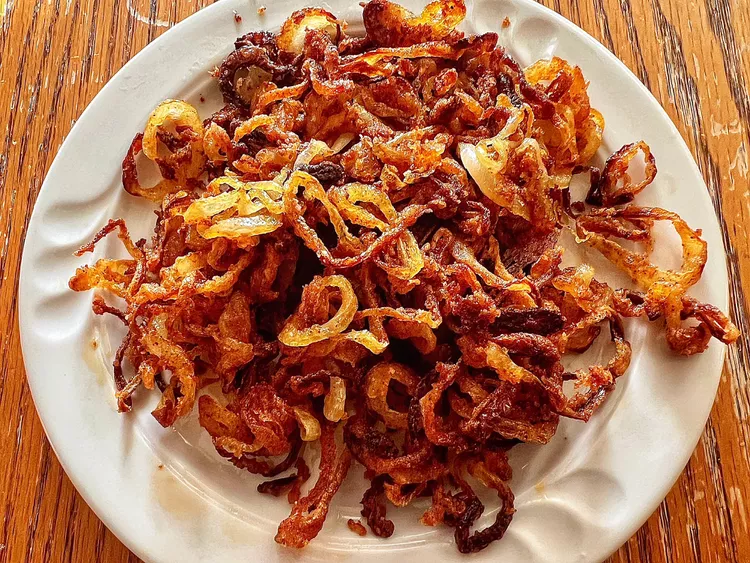

Home
Air Fryer Crispy Onions

Onion rings are a popular fried food consisting of thick slices of onion, typically coated in batter and/or breadcrumbs, and then deep-fried
Ingredients
- 1/4 cup all-purpose flour
- 1/2 teaspoon cayenne pepper
- 1/4 teaspoon salt, or to taste
avocado oil cooking spray
Steps
- Preheat an air fryer to 375 degrees F (190 degrees C) according to manufacturer's instructions.
- Combine flour, cayenne pepper, and salt in a bowl. Add onion slices and toss until well coated.
- Place onions in basket and spray with avocado oil. Air fry until golden brown, 18 to 23 minutes, shaking basket every 4 to 5 minutes.